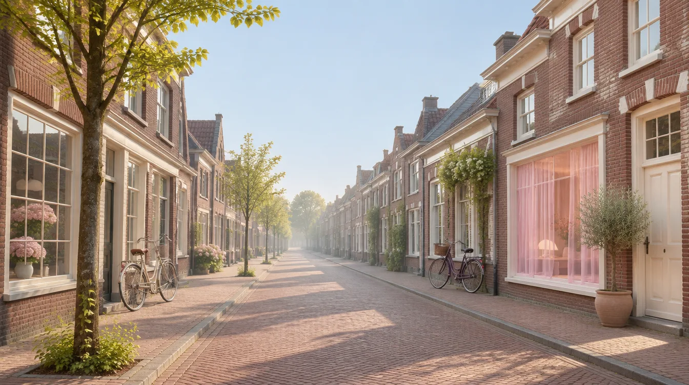
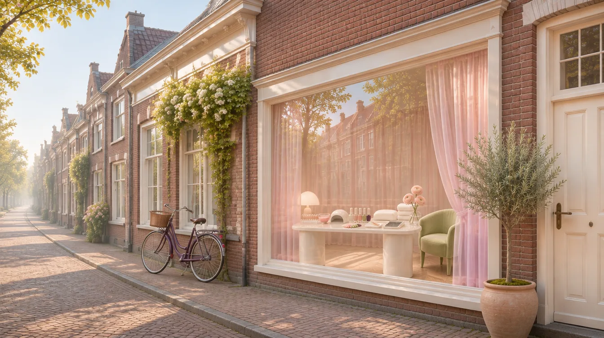
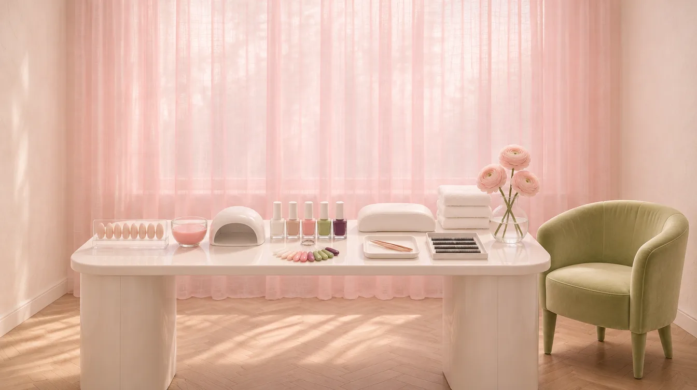
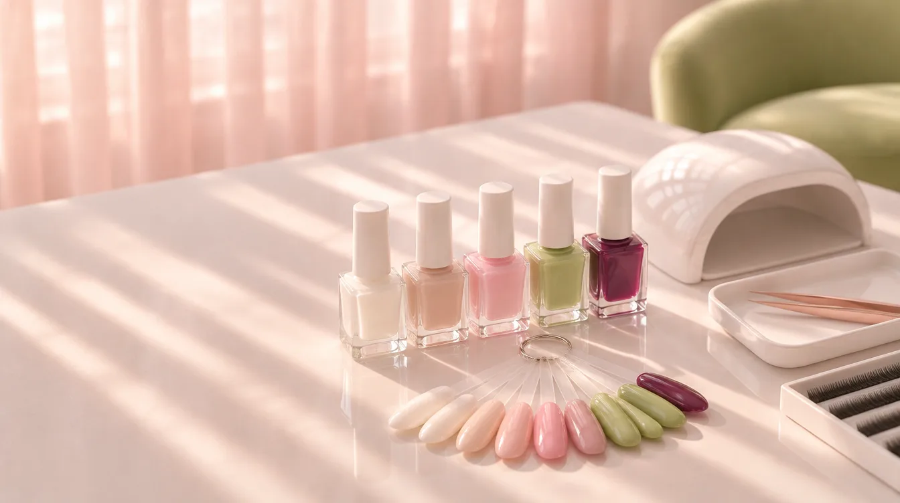
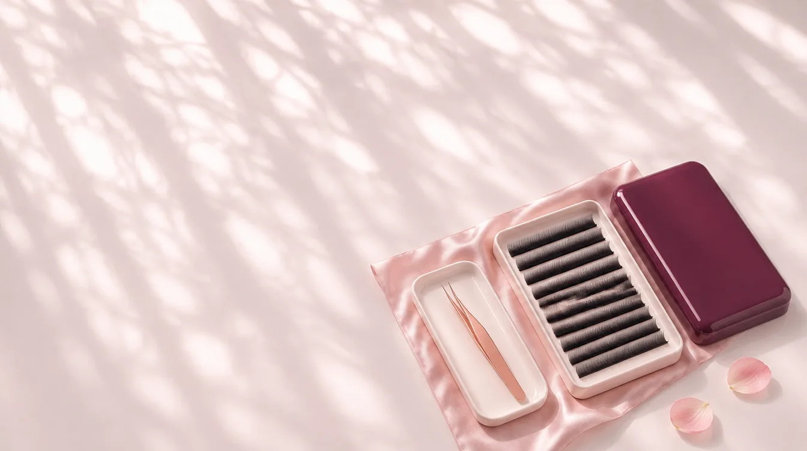
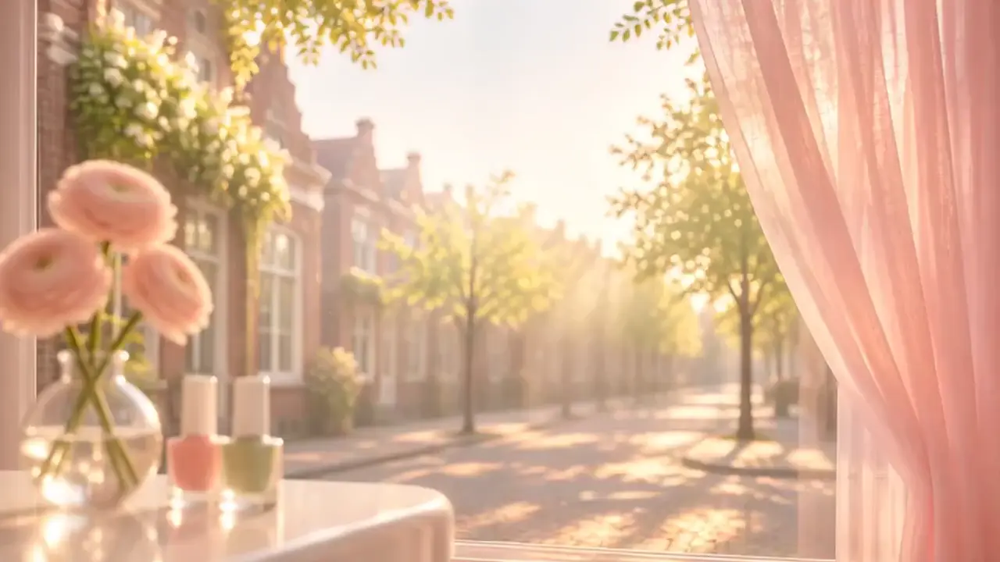

een studio om even te zijn.
Dolché Beauty is een beautystudio aan de Molenvlietstraat in Waalwijk. Een plek waar je handen even de hoofdrol krijgen — en jij een uurtje niets hoeft.

Beautystudio in WaalwijkSfeerbeeld — niet de echte geveleen studio om even te zijn.
Dolché Beauty is een beautystudio aan de Molenvlietstraat in Waalwijk. Een plek waar je handen even de hoofdrol krijgen — en jij een uurtje niets hoeft.
een gewone straat in waalwijk.
Een ochtend aan de Molenvlietstraat.

Sfeerbeeld — niet de echte gevelen daarachter: roze licht.
Een studio herken je aan de rust.
klein, rustig, precies.
Een kleine beautystudio is een bijzonder soort plek. Je komt voor je nagels, maar je blijft even voor de rust. Je gaat zitten, legt je handen neer, en een uurtje lang draait het alleen om de details: een strak randje, een gladde laag, de kleur die je zocht.
Dolché — dat klinkt als dolce, het Italiaanse woord voor zoet. Zoet als in: even iets voor jezelf. Maar een mooie manicure is ook precisiewerk. Daar draait deze site om: zacht in de sfeer, precies in het werk.
Dolché Beauty zit aan de Molenvlietstraat 1 in Waalwijk. Wil je zien wat er aan de tafel gebeurt? Op Instagram laat de studio zelf het werk zien.

Omdat details het verschil maken.
Omdat een strakke lijn langer mooi blijft.
Omdat een uurtje voor jezelf ook zoet is.
dit verhaal vertellen ze zelf.
Dit vertelt Dolché Beauty zelf — wordt ingevuld na overleg.
het werk van vandaag.
De nieuwste nagels en kleuren staan op Instagram. Daar zie je meteen wat er aan de tafel aan de Molenvlietstraat gebeurt.



Hier komen foto's van de studio, de tafel en het werk van Dolché Beauty.

tot zo aan de tafel.
Vraag je afspraak online aan in een minuut, of bel even als je liever iemand spreekt. Je vindt Dolché Beauty aan de Molenvlietstraat 1 in Waalwijk.